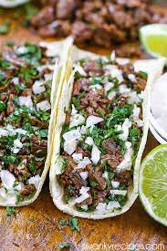

Carne Asada Tacos

Description
These Carne Asada steak tacos are loaded with juicy grilled steak packed into warm tortillas and topped with tangy fresh tomato salsa and a light drizzle of lime.
These delicious tacos are bursting with flavor and texture and can be made easily if you scroll down and follow what I have listed below.
Ingredients
- 3 pound of Flank Steak
Marinade:
- 1/2 cup of Soy Sauce
- 1/2 cup of Olive Oil
- 1/3 cup of White Vinegar
- 4 cloves of Garlic, minced
- 2 Limes, juiced
- 1 teaspoon of Salt, Ground Black Pepper, Ground White Pepper, and Garlic Powder
- 1 teaspoon of Chili Powder, Dried Oregano, Ground Cumin, and Paprika
Onion Relish:
- 1White Onion, chopped
- 1/2 cup of Chopped Fresh Cilantro
- 1 Lime, juiced
Salsa:
- 4 dried New Mexico Chile Pods
- 2 Large Tomatoes, chopped
- 1 White Onion, quartered
- 4 cloves of Garlic, peeled
- 2 Jalapeno Peppers, chopped
- 1 pinch of Salt and Black Pepper
Other:
- 1 (32 ounce) package of Corn Tortillas
- 2 cups of Grated Cotija Cheese (Optional)
- 2 Limes, cut into wedges
Steps
- Lay the flank steak in a large glass baking dish
- Make the marinade: Whisk all ingredients for the marinade(listed above) together in a bowl until well blended. Then, pour over steak, turning to coat both sides. Cover the dish with plastic wrap and marinate in the refrigerator for 1 to 8 hours.
- Next, make the relish: Stir onion, cilantro, and lime juice(all listed above) together in a small bowl. Set aside.
- Make the salsa: Preheat the oven to 450F. Heat a skillet over medium-high heat. Add chile pods and toast for a few minutes; transfer pods to a bowl of water and soak for 30 minutes.
- Cont..:Place the tomatoes, 1 onion, 4 cloves of garlic, and jalapeños onto a baking sheet. Roast in the preheated oven for about 20 minutes, or until vegetables are toasted. Transfer vegetables into a blender or food processor. Add soaked chiles, salt, and pepper; puree until smooth.
- Remove the steak from the marinade and shake off excess. Discard the remaining marinade. Cut the marinated flank steak into cubes or strips.
- Heat vegetable oil in a large skillet over medium-high heat. Add steak; cook and stir until cooked through and most of the liquid has evaporated.
- Warm tortillas in a dry skillet over low heat for about a minute on each side.
- Place some steak on each tortilla; top with relish and prepared salsa. Sprinkle with cotija cheese. Garnish with lime wedges and enjoy!